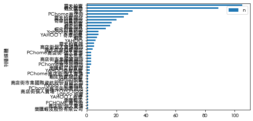

Fitering, groupby, and pivoting in pandas#
1. Filter rows by column value (Very Important)#
# Using illegal drugs dataset.
# Source: https://raw.githubusercontent.com/p4css/py4css/main/data/drug_156_2.csv
import pandas as pd
drug_df = pd.read_csv('https://raw.githubusercontent.com/p4css/py4css/main/data/drug_156_2.csv')
# drug_df
print(drug_df.columns)
drug_df.head()
/Users/jirlong/opt/anaconda3/lib/python3.9/site-packages/pandas/core/computation/expressions.py:21: UserWarning: Pandas requires version '2.8.4' or newer of 'numexpr' (version '2.8.1' currently installed).
from pandas.core.computation.check import NUMEXPR_INSTALLED
/Users/jirlong/opt/anaconda3/lib/python3.9/site-packages/pandas/core/arrays/masked.py:60: UserWarning: Pandas requires version '1.3.6' or newer of 'bottleneck' (version '1.3.4' currently installed).
from pandas.core import (
Index(['違規產品名稱', '違規廠商名稱或負責人', '處分機關', '處分日期', '處分法條', '違規情節', '刊播日期',
'刊播媒體類別', '刊播媒體', '查處情形'],
dtype='object')
| 違規產品名稱 | 違規廠商名稱或負責人 | 處分機關 | 處分日期 | 處分法條 | 違規情節 | 刊播日期 | 刊播媒體類別 | 刊播媒體 | 查處情形 | |
|---|---|---|---|---|---|---|---|---|---|---|
| 0 | 維他肝 | 豐怡生化科技股份有限公司/朱O | NaN | 03 31 2022 12:00AM | NaN | 廣告內容誇大不實 | 02 2 2022 12:00AM | 廣播電台 | 噶瑪蘭廣播電台股份有限公司 | NaN |
| 1 | 現貨澳洲Swisse ULTIBOOST維他命D片calcium vitamin VITAM... | 張O雯/張O雯 | NaN | 01 21 2022 12:00AM | NaN | 廣告違規 | 11 30 2021 12:00AM | 網路 | 蝦皮購物 | 輔導結案 |
| 2 | ✈日本 代購 參天製藥 處方簽點眼液 | 蘇O涵/蘇O涵 | NaN | 01 25 2022 12:00AM | NaN | 無照藥商 | 08 27 2021 12:00AM | 網路 | 蝦皮購物 | NaN |
| 3 | ✈日本 代購 TSUMURA 中將湯 24天包裝 | 蘇O涵/蘇O涵 | NaN | 01 25 2022 12:00AM | NaN | 無照藥商 | 08 27 2021 12:00AM | 網路 | 蝦皮購物 | 輔導結案 |
| 4 | _Salty.shop 日本代購 樂敦小花 | 曾O嫺/曾O嫺 | NaN | 02 17 2022 12:00AM | 藥事法第27條 | 無照藥商 | 12 6 2021 12:00AM | 網路 | 蝦皮購物 | 處分結案 |
1.1 Detecting patterns in strings by str.contains()#
Python | Pandas Series.str.contains() - GeeksforGeeks
Using str.contains() to filter rows by detecting patterns in strings. str.contains() returns a boolean Series based on whether a pattern or regex is contained within a string of a Series or Index.
# define a pattern to search for
pat = '代購|帶回'
# filter the DataFrame based on whether the '違規產品名稱' column contains the pattern
# `na=False` ensures that NaN values are treated as False
filtered_drug_df = drug_df[drug_df['違規產品名稱'].str.contains(pat=pat, na=False)]
filtered_drug_df.head()
| 違規產品名稱 | 違規廠商名稱或負責人 | 處分機關 | 處分日期 | 處分法條 | 違規情節 | 刊播日期 | 刊播媒體類別 | 刊播媒體 | 查處情形 | |
|---|---|---|---|---|---|---|---|---|---|---|
| 2 | ✈日本 代購 參天製藥 處方簽點眼液 | 蘇O涵/蘇O涵 | NaN | 01 25 2022 12:00AM | NaN | 無照藥商 | 08 27 2021 12:00AM | 網路 | 蝦皮購物 | NaN |
| 3 | ✈日本 代購 TSUMURA 中將湯 24天包裝 | 蘇O涵/蘇O涵 | NaN | 01 25 2022 12:00AM | NaN | 無照藥商 | 08 27 2021 12:00AM | 網路 | 蝦皮購物 | 輔導結案 |
| 4 | _Salty.shop 日本代購 樂敦小花 | 曾O嫺/曾O嫺 | NaN | 02 17 2022 12:00AM | 藥事法第27條 | 無照藥商 | 12 6 2021 12:00AM | 網路 | 蝦皮購物 | 處分結案 |
| 9 | 現貨正品 Eve 快速出貨 日本代購 白兔60 藍兔 40 eve 金兔 EVE 兔子 娃娃... | 張O恩/張O恩 | NaN | 03 4 2022 12:00AM | NaN | 無照藥商 | 12 21 2021 12:00AM | 網路 | 蝦皮拍賣網站 | 輔導結案 |
| 18 | [海外代購]纈草根膠囊-120毫克-240粒-睡眠 | 江O君/江O君 | NaN | 03 15 2022 12:00AM | NaN | 無照藥商 | 08 2 2021 12:00AM | 網路 | 蝦皮購物 | NaN |
1.2 Filtered by arithemetic comparison#
https://www.geeksforgeeks.org/ways-to-filter-pandas-dataframe-by-column-values/
We can filter rows in a DataFrame based on column values using comparison operators like >, <, ==, etc.
In the following example. we will (1) count the number of illegal drugs by “刊播媒體”, and then (2) filter the results to show only those with more than 5 records.
# count the number of illegal drugs by "刊播媒體"
media_count = drug_df["刊播媒體"].value_counts()
media_count.pipe(display) # It looks like a dataframe. However, ...
print(type(media_count)) # It's a pandas Series.
# Convert the Series to a DataFrame
media_count_df = media_count.reset_index()
print(type(media_count_df)) # Now it's a DataFrame.
print(media_count_df.columns) # Index(['刊播媒體', 'count'], dtype='object')
# You can rename the columns if needed
# media_count_df.columns = ['刊播媒體', 'count']
刊播媒體
蝦皮購物 523
露天拍賣 443
PChome商店街 164
蝦皮拍賣 158
露天拍賣網站 119
...
臺中群健有線電視 1
世新有線電視股份有限公司 1
群健有線電視 1
金頻道有線電視事業股份有限公司 1
吉隆有線電視股份有限公司、吉隆有線電視股份有限公司 1
Name: count, Length: 420, dtype: int64
<class 'pandas.core.series.Series'>
<class 'pandas.core.frame.DataFrame'>
Index(['刊播媒體', 'count'], dtype='object')
# Filter the DataFrame to show only rows where the count is greater than 5
# That is, filter high frequency media
media_count_df.loc[media_count_df["count"]>5]
| 刊播媒體 | count | |
|---|---|---|
| 0 | 蝦皮購物 | 523 |
| 1 | 露天拍賣 | 443 |
| 2 | PChome商店街 | 164 |
| 3 | 蝦皮拍賣 | 158 |
| 4 | 露天拍賣網站 | 119 |
| 5 | 蝦皮拍賣網站 | 98 |
| 6 | 露天 | 63 |
| 7 | 奇摩拍賣網站 | 62 |
| 8 | Yahoo!奇摩拍賣 | 60 |
| 9 | 奇摩拍賣 | 57 |
| 10 | 蝦皮 | 39 |
| 11 | YAHOO！奇摩拍賣 | 31 |
| 12 | 臉書 | 20 |
| 13 | YAHOO奇摩拍賣 | 19 |
| 14 | YAHOO | 18 |
| 15 | PChome商店街-個人賣場 | 15 |
| 16 | 商店街個人賣場網站 | 14 |
| 17 | 蝦皮購物網站 | 14 |
| 18 | "PCHOME | 13 |
| 19 | PCHOME個人賣場 | 13 |
| 20 | 露天拍賣網 | 12 |
| 21 | 吉隆有線電視股份有限公司 | 11 |
| 22 | Yahoo！奇摩拍賣 | 11 |
| 23 | 旋轉拍賣 | 10 |
| 24 | 9 | |
| 25 | Shopee蝦皮拍賣 | 9 |
| 26 | 8 | |
| 27 | 雅虎拍賣 | 8 |
| 28 | 康是美 | 8 |
| 29 | 蝦皮拍賣網 | 8 |
| 30 | 露天市集 | 7 |
| 31 | 平安藥局 | 7 |
| 32 | 壹週刊 | 7 |
| 33 | 雅虎奇摩拍賣網站 | 7 |
| 34 | 新台北有線電視股份有限公司 | 6 |
| 35 | PCHOME 商店街 | 6 |
| 36 | YAHOO！奇摩拍賣網 | 6 |
| 37 | Youtube | 6 |
1.3 Filtered by one-of by .isin()#
https://www.geeksforgeeks.org/ways-to-filter-pandas-dataframe-by-column-values/
Sometimes we want to filter rows based on whether the column value is in a list of values. We can use the .isin() method for this purpose.
options = ['蝦皮購物', '露天拍賣']
media_count_df.loc[media_count_df["刊播媒體"].isin(options)]
| 刊播媒體 | count | |
|---|---|---|
| 0 | 蝦皮購物 | 523 |
| 1 | 露天拍賣 | 443 |
2. groupby and pivot (Very Important)#
Reshaping and pivot tables — pandas 1.4.2 documentation (pydata.org)
2.1 groupby multiple factors to one new column#
We can use the groupby() method to group data by multiple columns and then use the size() method to count the occurrences of each group. The reset_index() method is used to convert the resulting Series back into a DataFrame.
Imaging we want to know the most common “違規情節” by “刊播媒體”, or, inverted, the most common “刊播媒體” by “違規情節”. We can use groupby() to group the data by both “違規情節” and “刊播媒體”, and then count the occurrences of each combination.
But before that, we need to count the total number of records by “刊播媒體” first, and filter in those with high counts (e.g., top 10). Also, we need to count the total number of records by “違規情節” and filter in those with high frequency (e.g., top 10).
# Count the number of illegal drugs by "違規情節"
violation_count = drug_df["違規情節"].value_counts()
violation_count.pipe(display)
# Select top 10 high frequency violations
top_10_violations = violation_count.nlargest(10)
top_10_violations.pipe(display)
# Count the number of illegal drugs by "刊播媒體"
media_count = drug_df["刊播媒體"].value_counts()
media_count.pipe(display)
# Select top 10 high frequency media
top_10_media = media_count.nlargest(10)
top_10_media.pipe(display)
# Count "違規情節" and "刊播媒體"
count = drug_df.groupby(["違規情節", "刊播媒體"]).size().reset_index(name="n")
# Filter to show only top 10 high frequency violations and media
count = count[count["刊播媒體"].isin(top_10_media.index)]
count = count[count["違規情節"].isin(top_10_violations.index)]
# print the dimension of the filtered DataFrame
print(count.shape) # (76, 3)
違規情節
無照藥商 1434
廣告違規 248
無違規 185
其刊登或宣播之廣告內容與原核准廣告內容不符 134
非藥商刊登或宣播藥物廣告 108
...
民眾向南投縣政府衛生局檢舉臺端以拍賣代號：luyurong，於蝦皮拍賣網站（網址https://shopee.tw/%E5%90%8EWHOO-%E7%BE%8E% E7%99%BD%E4%B8%B8-i.2528629.566166813，網頁下載日期：106年11月1日）刊登販售「后WHOO美白丸」產品，涉違反藥事法規定。經該局106年12月6日以投衛局藥字第1060029429號函移請本縣衛生局辦理。調查結果前揭產品經衛生福利部食品藥物管理署107年4月10日FDA藥字第1070011461號函判定為藥品。臺端未申領藥商許可執照，卻於網路販售前揭藥品，並經臺端坦承在案，此有訪談紀錄等資料在卷可證，核其違規事實應依後列法條予以處分如主旨。 1
屏東縣政府衛生局查獲受處分人於『PChome』商店街網站（網址：http://seller.pcstore.com.tw/S152892127/C1142758964.htm；賣家帳號「TaKakob」，下載日期：106年12月27日）刊登販售「ROIHI-TSUBOKO大判痠痛貼布78枚、158枚」藥品（違規案件系統編號：107W3305），惟受處分人未具販賣業藥商許可執照，違反藥事法相關規定。 1
「日本代購」現貨 EVE... 1
違反藥事法第27條 1
難以判定產品屬性 1
Name: count, Length: 201, dtype: int64
違規情節
無照藥商 1434
廣告違規 248
無違規 185
其刊登或宣播之廣告內容與原核准廣告內容不符 134
非藥商刊登或宣播藥物廣告 108
藥品未申請查驗登記 94
刊播未申請核准之廣告 85
廣告內容誇大不實 67
禁藥 40
廣告內容宣稱誇大療效 34
Name: count, dtype: int64
刊播媒體
蝦皮購物 523
露天拍賣 443
PChome商店街 164
蝦皮拍賣 158
露天拍賣網站 119
...
臺中群健有線電視 1
世新有線電視股份有限公司 1
群健有線電視 1
金頻道有線電視事業股份有限公司 1
吉隆有線電視股份有限公司、吉隆有線電視股份有限公司 1
Name: count, Length: 420, dtype: int64
刊播媒體
蝦皮購物 523
露天拍賣 443
PChome商店街 164
蝦皮拍賣 158
露天拍賣網站 119
蝦皮拍賣網站 98
露天 63
奇摩拍賣網站 62
Yahoo!奇摩拍賣 60
奇摩拍賣 57
Name: count, dtype: int64
(76, 3)
2.2 Pivoting count to wide format#
Sometimes we want to pivot a DataFrame from long format to wide format. We can use the pivot() method for this purpose. The purpose of pivoting is to make the DataFrame easier to read and analyze.
# Pivoting count to wide format
pivot_count = count.pivot(index='違規情節', columns='刊播媒體', values='n').fillna(0)
pivot_count
| 刊播媒體 | PChome商店街 | Yahoo!奇摩拍賣 | 奇摩拍賣 | 奇摩拍賣網站 | 蝦皮拍賣 | 蝦皮拍賣網站 | 蝦皮購物 | 露天 | 露天拍賣 | 露天拍賣網站 |
|---|---|---|---|---|---|---|---|---|---|---|
| 違規情節 | ||||||||||
| 刊播未申請核准之廣告 | 2.0 | 3.0 | 0.0 | 0.0 | 7.0 | 1.0 | 2.0 | 6.0 | 18.0 | 0.0 |
| 廣告內容宣稱誇大療效 | 2.0 | 3.0 | 0.0 | 0.0 | 3.0 | 0.0 | 8.0 | 0.0 | 3.0 | 0.0 |
| 廣告內容誇大不實 | 0.0 | 1.0 | 1.0 | 1.0 | 6.0 | 3.0 | 7.0 | 2.0 | 8.0 | 0.0 |
| 廣告違規 | 7.0 | 11.0 | 6.0 | 1.0 | 22.0 | 2.0 | 44.0 | 2.0 | 25.0 | 1.0 |
| 無照藥商 | 121.0 | 23.0 | 26.0 | 28.0 | 78.0 | 61.0 | 366.0 | 25.0 | 173.0 | 67.0 |
| 無違規 | 2.0 | 11.0 | 5.0 | 4.0 | 9.0 | 8.0 | 13.0 | 7.0 | 60.0 | 11.0 |
| 禁藥 | 0.0 | 0.0 | 4.0 | 1.0 | 5.0 | 0.0 | 6.0 | 1.0 | 8.0 | 5.0 |
| 藥品未申請查驗登記 | 2.0 | 1.0 | 3.0 | 5.0 | 8.0 | 7.0 | 5.0 | 2.0 | 14.0 | 10.0 |
| 非藥商刊登或宣播藥物廣告 | 4.0 | 0.0 | 1.0 | 4.0 | 10.0 | 5.0 | 21.0 | 3.0 | 19.0 | 7.0 |
3. Plotting#
pat1 = '代購|帶回'
pat2 = '蝦皮|露天|拍賣|YAHOO|商店街'
filtered_drug_df = drug_df.loc[drug_df['違規產品名稱'].str.contains(pat=pat1, na=False) &
drug_df['刊播媒體'].str.contains(pat=pat2, na=False)]
filtered_drug_df.head()
| 違規產品名稱 | 違規廠商名稱或負責人 | 處分機關 | 處分日期 | 處分法條 | 違規情節 | 刊播日期 | 刊播媒體類別 | 刊播媒體 | 查處情形 | |
|---|---|---|---|---|---|---|---|---|---|---|
| 2 | ✈日本 代購 參天製藥 處方簽點眼液 | 蘇O涵/蘇O涵 | NaN | 01 25 2022 12:00AM | NaN | 無照藥商 | 08 27 2021 12:00AM | 網路 | 蝦皮購物 | NaN |
| 3 | ✈日本 代購 TSUMURA 中將湯 24天包裝 | 蘇O涵/蘇O涵 | NaN | 01 25 2022 12:00AM | NaN | 無照藥商 | 08 27 2021 12:00AM | 網路 | 蝦皮購物 | 輔導結案 |
| 4 | _Salty.shop 日本代購 樂敦小花 | 曾O嫺/曾O嫺 | NaN | 02 17 2022 12:00AM | 藥事法第27條 | 無照藥商 | 12 6 2021 12:00AM | 網路 | 蝦皮購物 | 處分結案 |
| 9 | 現貨正品 Eve 快速出貨 日本代購 白兔60 藍兔 40 eve 金兔 EVE 兔子 娃娃... | 張O恩/張O恩 | NaN | 03 4 2022 12:00AM | NaN | 無照藥商 | 12 21 2021 12:00AM | 網路 | 蝦皮拍賣網站 | 輔導結案 |
| 18 | [海外代購]纈草根膠囊-120毫克-240粒-睡眠 | 江O君/江O君 | NaN | 03 15 2022 12:00AM | NaN | 無照藥商 | 08 2 2021 12:00AM | 網路 | 蝦皮購物 | NaN |
# Count the number of illegal drugs by "刊播媒體"
toplot = filtered_drug_df['刊播媒體'].value_counts().reset_index(name = "n").rename(columns={"index": "media"})
3.1 About the matplotlib resolution#
change font type:
matplotlib.rcParams['font.family'] = ['Heiti TC']https://stackoverflow.com/questions/39870642/matplotlib-how-to-plot-a-high-resolution-graph
Best result:
plt.savefig('filename.pdf')To png:
plt.savefig('filename.png', dpi=300)
Adjust resolution
For saving the graph:
matplotlib.rcParams['savefig.dpi'] = 300For displaying the graph when you use plt.show():
matplotlib.rcParams["figure.dpi"] = 100
3.2 Plot with Chinese font#
# Colab 進行matplotlib繪圖時顯示繁體中文
# 下載台北思源黑體並命名taipei_sans_tc_beta.ttf，移至指定路徑
!wget -O TaipeiSansTCBeta-Regular.ttf https://drive.google.com/uc?id=1eGAsTN1HBpJAkeVM57_C7ccp7hbgSz3_&export=download
import matplotlib as mpl
import matplotlib.pyplot as plt
from matplotlib.font_manager import fontManager
# 改style要在改font之前
# plt.style.use('seaborn')
fontManager.addfont('TaipeiSansTCBeta-Regular.ttf')
mpl.rc('font', family='Taipei Sans TC Beta')
# Plotting
import matplotlib
matplotlib.rcParams['figure.dpi'] = 150 # Set the resolution of the figure
matplotlib.rcParams['font.family'] = ['Heiti TC'] # Set the font to a Chinese font available on your system
toplot.plot.barh(x="刊播媒體").invert_yaxis() # Invert y axis to have the highest bar on top
